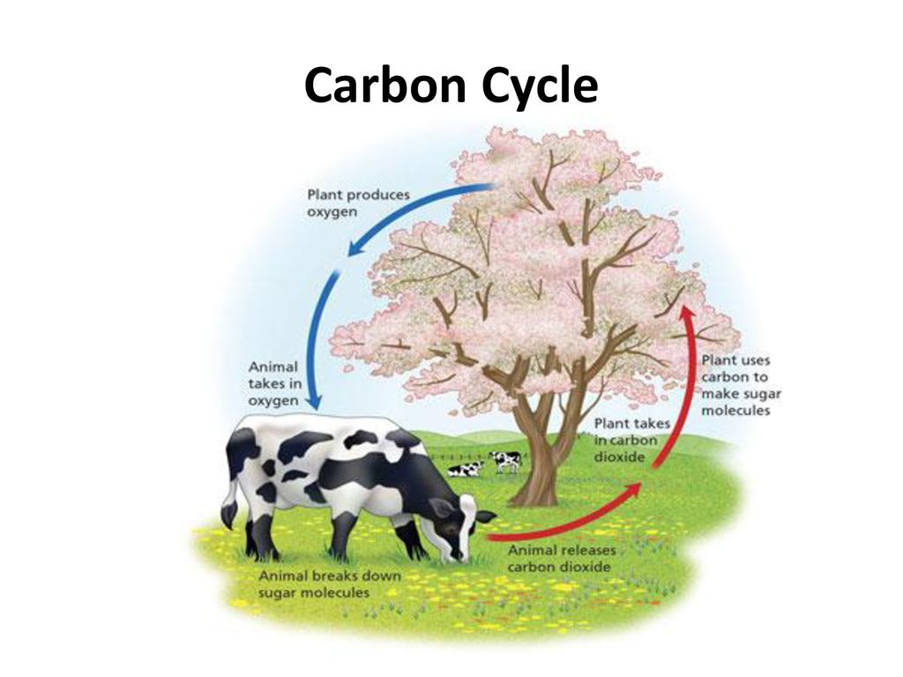

Photosynthesis and Respiration
The sun is the ultimate source of all energy for all living things. The sun emits heat and light (radiant energy). Not all living organisms can use radiant energy directly. Green plants, on the other hand, can use radiant energy directly to make food (photosynthesis).
Photosynthesis is the series of chemical reactions in which green plants convert radiant energy into chemical potential energy in the form of glucose.
Living organisms are interdependent (rely on each other). All of them can use chemical potential energy to carry out their life processes. Plants are the only organisms that can convert radiant into chemical potential energy, which make them essential to life.
Resources plants need for photosynthesis:
The primary purpose of photosynthesis is to produce glucose for food, but oxygen is also produced as a by-product, which is released through the plant’s stomata.
Word equation for photosynthesis:
Carbon dioxide + water ——————> glucose + oxygen
Chemical equation:
CO2 + H20 —————-> C6H12O6 + O2
Chlorophyll and radiant energy are needed for the reaction but are not part of the reactants or products.
Factors that affect the rate of photosynthesis:
Without light plants cannot photosynthesise. Increasing light intensity increases the rate of photosynthesis until some limiting factor is in short supply. At high light intensities, photosynthesis is slowed and then inhibited. These high light intensities don’t happen in nature.
If carbon dioxide is increased, the rate of photosynthesis will also increase. A different factor may become limiting. Beyond this concentration, a further increase in the concentration of carbon dioxide will not result is faster photosynthesis.
Chemical reactions that combine carbon dioxide and H20 to produce glucose are controlled by enzymes (proteins that act as biological catalysts). The rate of photosynthesis is affected by temperature. At low temperatures, enzymes don’t function optimally, so the rate of photosynthesis is limited. At high temperatures, enzymes are destroyed so photosynthesis can’t occur.
Glucose is soluble in water; it allows plants to transport glucose to where it’s needed. Because it is a soluble it can’t be stored as glucose. It must be converted to insoluble compounds, e.g.: starch and cellulose. Starch is stored in seeds and fruits of a plant as a food source e.g.: potatoes, rice and grains.Cellulose is a compound that plants use to make cell walls, that provide support and strengthen cells.
Cellular respiration is a series of chemical reactions in which energy is released from glucose.
Respiration occurs in the mitochondrion (small structure inside all living cells)
Respiration occurs in all living organisms, including plants even though they don’t need to eat as they make their own food during photosynthesis.
By-products of cellular respiration are Oxygen and Carbon dioxide.
Carbon dioxide produced in the body of an organism during respiration has to be removed. Humans and animals breathe out Carbon dioxide-rich air. Photosynthesis and Cellular respiration, therefore, are naturally linked.
Word equation for cellular respiration
Glucose + oxygen ——> energy + carbon dioxide + water
Chemical equation for cellular respiration
C6H12O6 + O2 ——-> ATP + CO2 + H2O
